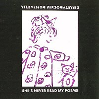

Television Personalities |
 1992 - Fire - BLAZE44049/55049 - 12"/CD The Melodies: She's Never Read My Poems The Day The Dolphins Leave The Sea Christ Knows, I Have Tried She's Never Read My Poems - 7" version (only on CD)
The Artistes: Daniel Treacy, Jefferey Bloom, Jowe Head Sleeve photography by Alison Withers. Front photo: "C is for cat" (1991). Back photo: "Barbie's in town" (1991). Reproduced by kind permission of the School Of Visuals And Performing Art, London. |